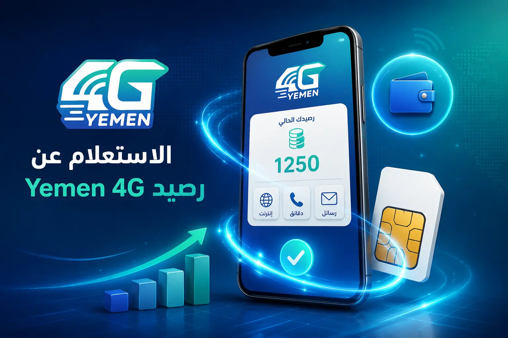
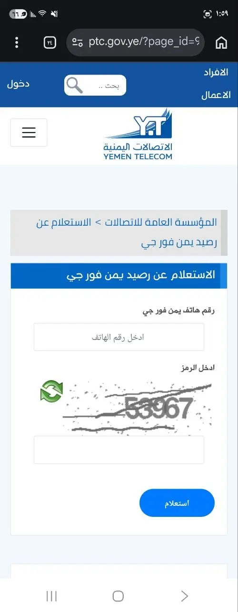
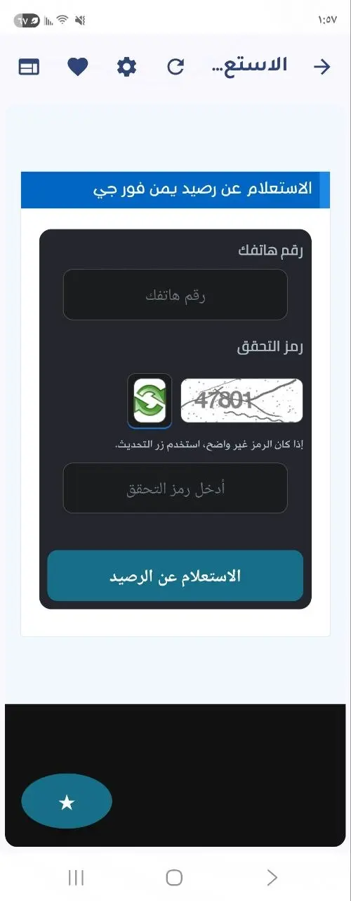

كيفية الاستعلام عن رصيد يمن فورجي 4G: دليل شامل ومحدث 2026

تعد خدمة "يمن فورجي" (Yemen 4G) التي تقدمها المؤسسة العامة للاتصالات في اليمن واحدة من أسرع حلول الإنترنت اللاسلكي المتاحة حالياً. ولمساعدة المشتركين في إدارة استهلاكهم وضمان عدم انقطاع الخدمة فجأة، سنستعرض في هذا المقال كافة الطرق الرسمية والواقعية للاستعلام عن الرصيد المتبقي وتاريخ انتهاء الصلاحية لعام 2026.
1. رابط الاستعلام عن رصيد يمن فورجي الرسمي (ptc.gov.ye)
هذه هي الطريقة الأكثر دقة وموثوقية، حيث يتم جلب البيانات مباشرة من سيرفرات المؤسسة العامة للاتصالات.

- قم بزيارة الرابط الرسمي المباشر: ptc.gov.ye/4g
- أدخل رقم هاتف يمن فورجي الخاص بك (الرقم المكون من 9 أرقام والذي يبدأ غالباً بالرقم 1).
- أدخل رمز التحقق المرئي الظاهر في الصورة.
- اضغط على زر "استعلام" لتظهر لك تفاصيل الرصيد بالجيجابايت وتاريخ انتهاء الباقة.
2. تحميل تطبيق رصيد يمن فورجي للأندرويد
تسهيلاً للمشتركين، يتوفر تطبيق رسمي مخصص للهواتف الذكية يتيح الاستعلام السريع والمباشر عن الرصيد دون الحاجة لفتح المتصفح يدوياً في كل مرة.

يمكنك تحميل تطبيق رصيد يمن فورجي مباشرة من متجر جوجل بلاي عبر الرابط التالي: تحميل التطبيق من Google Play. بمجرد إدخال رقم اشتراكك، سيقوم التطبيق بجلب كافة بيانات رصيدك وتاريخ انتهاء الباقة بضغطة زر واحدة.
3. الاستعلام عن رصيد يمن فورجي عبر بوت تليجرام
لمحبي تطبيقات المراسلة، توفر الخدمة بوت مخصص على منصة تليجرام يتيح الاستعلام عن الرصيد بطريقة تفاعلية وسهلة.
يمكنك الوصول إلى البوت الرسمي عبر الرابط التالي: t.me/YemenNet4G_bot/yemen4g. اتبع التعليمات داخل البوت وأرسل رقم خدمتك للحصول على تفاصيل الباقة فوراً.
4. رقم خدمة عملاء يمن فورجي والدعم الفني (8000000)
في حال فقدت رقم اشتراكك أو واجهت مشكلة في الدخول للموقع، يمكنك التواصل مع الرقم المجاني الموحد.
اتصل بالرقم 8000000 واطلب من المجيب تزويدك بتفاصيل رصيدك أو رقم اشتراكك بعد التأكد من بياناتك الشخصية المسجلة.
نصائح تقنية لمشتركي يمن فورجي
- تأمين المودم: تأكد من تغيير كلمة مرور الوايفاي وكلمة مرور لوحة التحكم (غالباً 10.0.0.1) لتجنب سرقة الرصيد.
- إيقاف التحديثات: ننصح بضبط إعدادات ويندوز وهواتف الأندرويد على وضع "Limited Connection" لإيقاف استهلاك البيانات في الخلفية.
- التجديد المبكر: يفضل تجديد الباقة قبل انتهائها بـ 24 ساعة لضمان عدم حدوث تعليق في النظام عند نفاذ الجيجابايت تماماً.
أسئلة شائعة حول يمن فورجي
لماذا لا يعمل رابط الاستعلام عن الرصيد أحياناً؟
لاحظ العديد من المشتركين أن صفحة الاستعلام لا تفتح أو تعطي خطأ في التحميل؛ والسبب الرئيسي هو أن النظام لا يعمل في حال تشغيل برامج VPN أو عند محاولة الوصول إليه من خارج اليمن. تأكد من إيقاف أي تطبيق VPN واستخدام اتصال يمن فورجي المباشر عند الاستعلام.